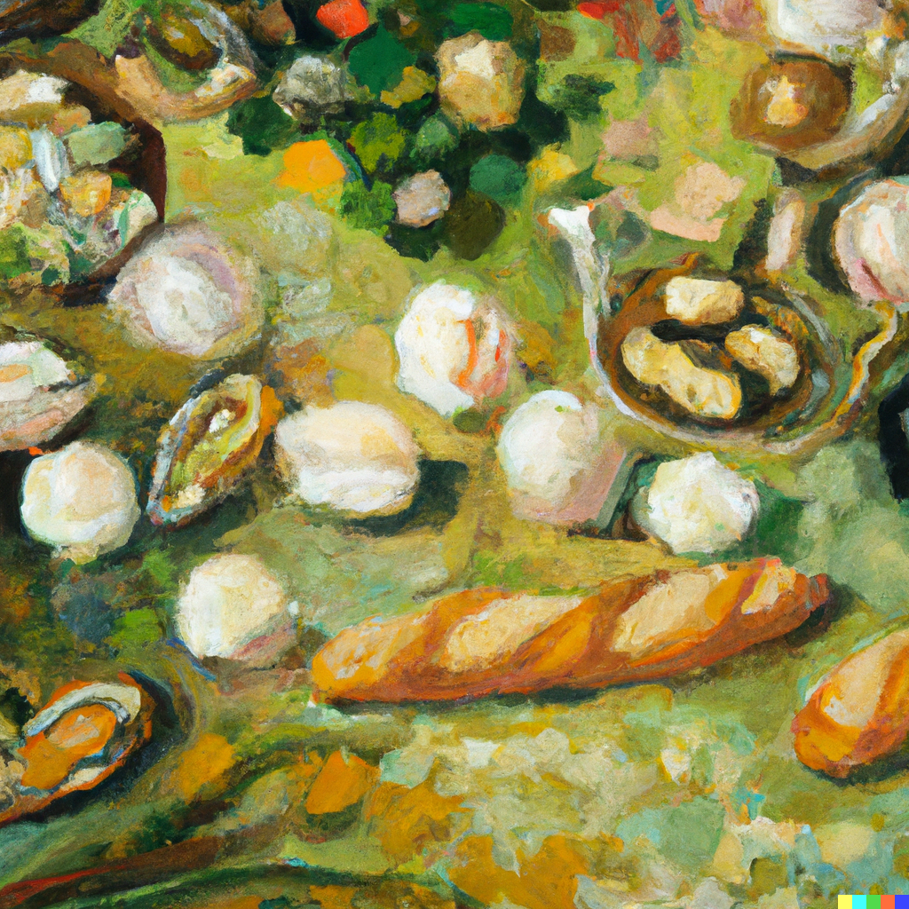

"What type of animal do you guys see me with as a witch?" Mary asks her friends, taking a bite out of her sandwich, "I was thinking of a cat." Mary looks over to her friends as they munch on their honey bread.
"Well, I don't really know about all of the animals but I can see you having a cat. They are so cute, they can also help with the garden as well, sometimes mice gets in and nibble on the herbs." Gladiolus laughs, "But whichever one you wish for is going to be okay." Mary wonders what kind of personality the cat will have, she doesn't mind if the cat is grumpy but she would prefer a cat that is more fun like herself.
"Mary do you want to hang out with us this weekend? You still have a lot of places to explore and we can guide you around," Freesia chirps up smiling, she squeals just by thinking about the different places that they can all go to with Mary. Mary knows not to fantasize about the different places because this is not a fairy tale but seeing all of the magic that this world has to offer will bee a delight.
"Of course, I can't wait. I am already wondering about what I will see on the weekend."
| Beginning | Next Day |